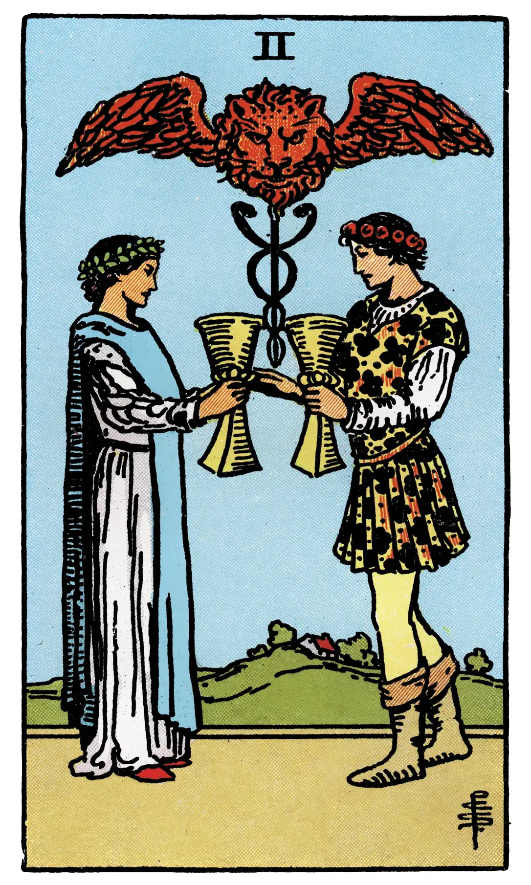

Two of Cups

A.E.W.
Upright
Love, passion, friendship, affinity, union, concord, sympathy, the interrelation of the sexes, and – as a suggestion apart from all offices of divination – that desire which is not in Nature, but by which Nature is sanctified.
Additionally
Favourable in things of pleasure and business, as well as love; also wealth and honour.
Recurrence
2 - Accord.
3 - Security.
4 - Contention.
Reversed
[Many/most/all copies of Waite's The Pictorial Key to the Tarot and The Key to the Tarot are missing a reversed divinatory meaning for this card. However, at least one source (Huson) gives "passion".]
Additionally
Passion.
Recurrence
2 - Mistrust.
3 - Apprehension.
4 - Reconciliation.
S.L.M.M.
Upright
Love, Attachment, Friendship, Sincerity, Affection
Reversed
Crossed desires, Obstacles, Opposition, Hindrance.
Description
A youth and maiden are pledging one another, and above their cups rises the Caduceus of Hermes, between the great wings of which there appears a lion's head. It is a variant of a sign which is found in a few old examples of this card. Some curious emblematical meanings are attached to it, but they do not concern us in this place.